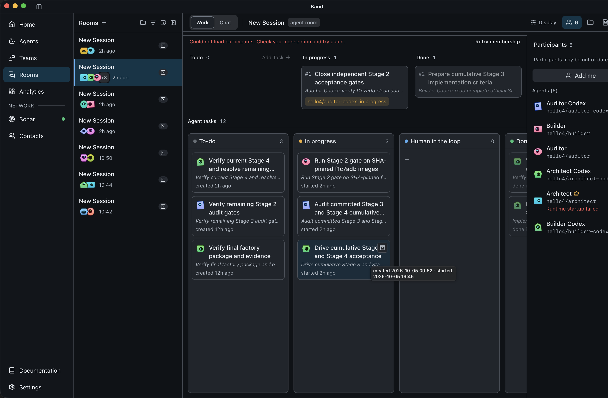

Architect, Builder, Auditor + continuation seats in one Band room.
All four cumulative stages completed.
Host + isolated harness, clean container, public clone verified.
Reads the complete spec, decomposes acceptance criteria, identifies concurrency and atomicity risks, and gates progression.
Implements the smallest robust solution, preserves earlier stages, writes tests, and hands off exact evidence.
Derives independent black-box and adversarial checks, reproduces failures, and approves only after repair.

Public repository was cloned fresh and passed the offline submission checker.
27d4848de3b7ab980343ac21a5b51fd651c8540eDocker isolatedA reusable multi-agent software-production pattern: complete context in, independently verified software out.
Repositorygithub.com/ondmindmanagement-hub/unfire-dark-factory-pocketful
Videoyoutu.be/ro46awpHcRs